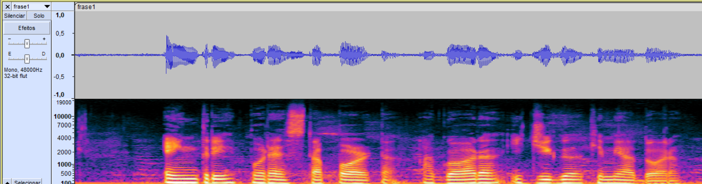

Codificação de Sinais Multimídia - 3° Quadrimestre de 2023
Atividade de Audiometria e Acuidade Visual e análises individuais das gravações com Python
Objetivos:
Esse Laboratório tem como objetivo gravar e comparar sinais de voz com vários tipos de microfone: dinâmico e capacitivo, além de observar características temporarais importantes no sinal de voz como envoltória de Energia e Pitch e analisar espectrograma e domínio da frequência.
Procedimentos:
Para o Laboratório, foi utilizado os seguintes materiais: 1 microfone capacitivo Behinger (prata) com pedestal; 1 microfone dinâmico Shure (preto) com suporte de mesa; 1 fone de ouvido envolvente; Software Audacity; 1 interface M-Audio Profire 610 com cabo firewire.
Primeiramente foi realizada o ajuste de áudio conforme o roteiro. Em seguida foram gravados os áudios em cada microfone, do nome de cada integrante do grupo, o RA falado dígito por dígito, uma frase, um poema e por fim o grupo cantou um refrão de uma música utilizando dois microfones simultâneos. Os resultados individuais estão expostos nos links dos botões acima.
Resultados:
1. Gravações e transcrições do nome e RA dos integrantes:
Lucas Nicolau Aperguis:
Microfone preto:
Transcrição: Lucas Nicolau Aperguis
Transcrição: RA:11014415
Microfone prata:
Transcrição: Lucas Nicolau Aperguis
Transcrição: RA:11014415
2. i.
Forma de onda e espectrograma da frase1 com microfone preto.

Forma de onda e espectrograma da frase1 com microfone prata.
Os microfones dinâmicos utilizam bobinas de fio metálico suspensa em um campo magnético. Por outro lado, os microfones capacitivos ou condensadores, usam a vibração de um diafragma como dispositivo condensador. Os capacitivos são mais sensíveis e captam muito mais ruídos, o que é muito visível no formato de onda do sinal, com maior amplitude e uma densidade de energia maior vista no espectrograma.